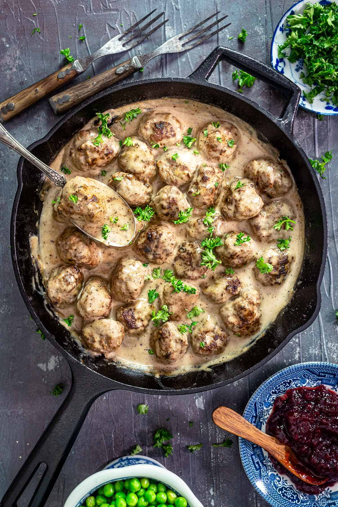

Köttbular
Sweden

Ingredients
- Small Onion
- Ground Beef
- Ground Pork
- Breadcrumbs
- Large Egg
- Salt
- Ground White Pepper
- All-Purpose Flour
- Beef Stock
- Milk
- Soy Sauce
- Heavy Cream (optional)
- Ligonberry/Red Currant Jam
- Salt
- Ground White Pepper
For Meatballs
For Creamy Gravy
Methods
- Sauté onion in butter until translucent. Remove from the pan and let cool to room temperature
- To the bowl with onions, add Ground beef and Pork, breadcrumbs, egg, salt, and pepper
- Mix, then roll into balls
- Heat remaining butter, fry until golden brown
- Transfer to a plate lined with paper towels
For Meatballs
- Over medium-low heat, whisk flour in butter until lightly browned.
- Gradually stir beef broth and milk, constantly whisking, until slightly thickened
- Add soy sauce and heavy cream, let simmer until thickened
- Season with salt and pepper and stir in Jam
Creamy Gravy